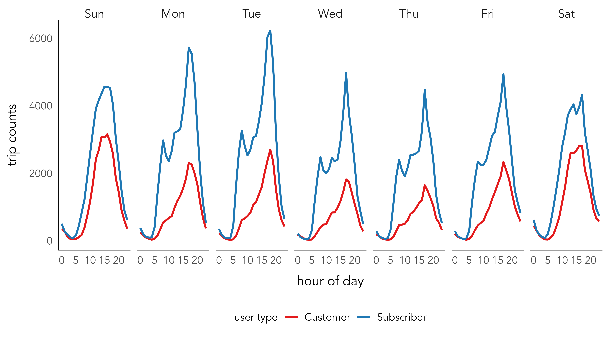

| Measurement | Example | Operators | Midpoint | Spread |
|---|---|---|---|---|
| Categories | ||||
| Nominal | Political parties; street names | = ≠ | mode | entropy |
| Ordinal | Terrorism threat levels | = ≠ | median | percentile |
| Measures | ||||
| Interval | Temperatures; years | = ≠ + - | mean | variance |
| Ratio | Distances; prices | = ≠ + - | × ÷ | mean | variance |
Data
Visualization
with R
– July 2025
Session 2 : Data Fundamentals
Schedule
1415 – 1515 : Concepts
1515 – 1545 : Break + set-up (tech)
1545 – 1645 : Live coding explanation
1645 – 1730 : Independent work through tasks
1730 – 1745 : Recap + looking ahead
Data structure
Data frame
Stevens levels of measurement
R data types
| Type | Description |
|---|---|
| lgl | Logical -- vectors that can contain only `TRUE` or `FALSE` values |
| int | Integers -- whole numbers |
| dbl | Double -- real numbers with decimals |
| chr | Character -- text strings |
| dttm | Date-times -- a date + a time |
| fctr | Factors -- represent categorical variables of fixed and potentially orderable values |
Applying Stevens levels of measurement
- dataset: Citibike OD trip data
- variables:
trip_distance|user_type - measurement:
ratio|nominal
- dataset: Citibike OD trip data
- variable:
trip_speed|user_age_band|user_type|trip_distance - measurement:
ratio|ordinal|nominal|ordinal
- dataset: Citibike OD trip data
- variable:
trip_count|hod|user_type|day_week - measurement:
ratio|interval|cyclic ratio|nominal|ordinal

Tidy data
| treatment | John Smith | Jane Doe | Mary Johnson |
|---|---|---|---|
| treatment_a | -- | 16 | 3 |
| treatment_b | 2 | 11 | 1 |
| person | treatment | result |
|---|---|---|
| John Smith | a | -- |
| John Smith | b | 2 |
| Jane Doe | a | 16 |
| Jane Doe | b | 11 |
| Mary Johnson | a | 3 |
| Mary Johnson | b | 1 |
| country | year | f_cases | m_cases | f_population | m_population |
|---|---|---|---|---|---|
| Afghanistan | 1999 | 447 | 298 | 9993400 | 9993671 |
| Afghanistan | 2000 | 1599 | 1067 | 10296280 | 10299080 |
| Brazil | 1999 | 16982 | 20755 | 86001181 | 86005181 |
| Brazil | 2000 | 39440 | 41048 | 87251329 | 87253569 |
| China | 1999 | 104007 | 108252 | 636451250 | 636464022 |
| China | 2000 | 104746 | 109759 | 640212600 | 640215983 |
| country | year | cases | population |
|---|---|---|---|
| Afghanistan | 1999 | 745 | 19987071 |
| Afghanistan | 2000 | 2666 | 20595360 |
| Brazil | 1999 | 37737 | 172006362 |
| Brazil | 2000 | 80488 | 174504898 |
| China | 1999 | 212258 | 1272915272 |
| China | 2000 | 213766 | 1280428583 |
Tidy data and dplyr

dplyr’s grammar of data manipulation
| function() | Description |
|---|---|
| filter() | Picks rows (observations) if their values match a specified criteria |
| arrange() | Reorders rows (observations) based on their values |
| select() | Picks a subset of columns (variables) by name (or name characteristics) |
| rename() | Changes the name of columns in the data frame |
| mutate() | Adds new columns |
| group_by() | Chunks the dataset into groups for grouped operations |
| summarise() | Calculates single-row (non-grouped) or multiple-row (if grouped) summary values |
| ... |
dplyr’s grammar of data manipulation
dplyr’s grammar of data manipulation
- Start with a data frame
- Pass some arguments to the function which control what you do to the data frame.
- Return the updated data frame.
Use %>% for a layered grammar of manipulation
- Start with a data frame
- Pass some arguments to the function which control what you do to the data frame.
- Return the updated data frame.